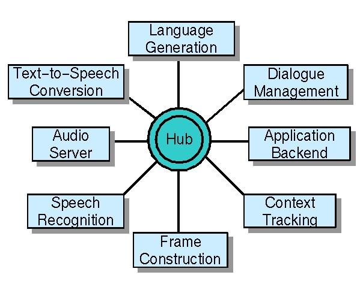

Galaxy Communicator Documentation:
Toplevel Index

The Galaxy Communicator software infrastructure is a distributed,
message-based, hub-and-spoke infrastructure optimized for constructing
spoken dialogue systems. The Galaxy Communicator infrastructure is an extension
and evolution of the distributed infrastructure for the MIT Galaxy
system, and is being developed and maintained by the MITRE Corporation under the aegis
of the DARPA
Communicator program. The Galaxy Communicator infrastructure is available
under a liberal open source license from the Galaxy Communicator Sourceforge
site. This is version 4.0 of the Galaxy Communicator distribution.
The HTML version of this documentation is best viewed with a recent standards-compliant
browser such as Mozilla 1.0.
This documentation is divided into four parts:
- a tutorial, which will introduce you
to the fundamentals of the Galaxy Communicator infrastructure and teach
you enough to get started;
- a set of advanced topics,
which describe the more complex capabilities of the infrastructure;
- a reference section, which provides
additional details about the basic and advanced topics; and
- an administrative section,
which deals with installing and upgrading the infrastructure.
Before you begin, please read the introduction
and overview, which will help you decide whether the Galaxy Communicator
infrastructure can help you.
Help and feedback
General instructions
There are two resources available to you: the bugs-darpacomm@linus.mitre.org
bug queue and the public mailing lists.
Please do not send messages directly to the individual developers.
It's easier for us to track problems and respond promptly if you use the
mailing lists or the bug queue. If you receive mail from an individual developer
in response to a submission to the bug queue, feel free to reply, but please
do not delete any "CC:" entries in the mail you receive.
We recommend that everyone who uses the Galaxy Communicator infrastructure
subscribe to the main public mailing list, for release announcements and
other information you may find useful.
Getting help
If you need help with the Galaxy Communicator infrastructure, please
start with the following steps.
- Finish the tutorial. We've tried
to design the tutorial to answer the most basic questions and provide a
common vocabulary. If you don't know the information in the tutorial, you
probably don't know enough about the infrastructure to ask your question.
- Skim the advanced topics.
The first paragraph of each topic describes the basic purpose of the document.
The answer to your question may very well be there.
- Read the frequently asked questions.
They really are the most frequently asked questions.
We do realize that people don't like to read documentation, and we
also realize that there's a great deal of it (pushing 800 pages in the
latest PDF version), but it's really a tremendous source of information
about the Galaxy Communicator infrastructure. Most likely, the first question
one of us will ask you is whether you've followed these three steps.
If your question still isn't answered, then by all means send a query
to one of the addresses above.
Reporting a bug
It's best to send a message to the bugs-darpacomm@linus.mitre.org
bug queue as described above.
Feature requests
Either the public mailing list or the bug queue is fine.
Tutorial
If you intend to run the examples in the tutorial rather than simply
read it, make sure that the Galaxy Communicator distribution has been
installed so that the tutorial can
be run on Unix
or (as of version 4.0) Windows.
Advanced topics
These topics are also presented in tutorial style, where possible.
Reference
- Frequently asked questions
- The Hub and server executables
- Frame and object reference
- Building a Communicator-compliant
server
- Program file reference
- Logging reference
- Broker reference (vastly
improved for 4.0)
- The structure of
a server (expanded in 4.0)
- Reserved frame keys
in Galaxy Communicator
- API indexes
- Glossary
- Examples
- Basic
server example: double
Exemplifies the basics of creating a server, declaring servers and
message signatures, sending new messages to the Hub, raising and handling
errors, and defining server and connection initialization functions, in
C, Python, Java and Allegro Common Lisp. Also exemplifies using command
line argument parsing, scriptless interaction, run-time script error checking,
logging, listener-in-Hub functionality, and how to use continuations.
- Audio and
brokering
Exemplifies creating and managing broker connections in C, Python,
Java and Allegro Common Lisp. Also exemplifies interacting with the MITRE
broker packaging utilities. - Alternative
main loops
Exemplifies how to write Communicator-compliant servers using a
non-Communicator main loop. - Binary objects
for audio and data
Exemplifies how to use binary (8-bit) data for audio in frames (instead
of brokering) and for opaque encoding of arbitrary objects (including
MITRE support). - Using non-MIT
makefiles
Exemplifies how to compile Communicator-compliant servers without
using the MIT makefile templates. - Running a multiple-connection
server
Illustrates how to run multiple Hubs against the same server.
- MIT executables and facilities
- MITRE
utilities
- MITRE tools
- MITRE toy travel
demo reference
- Programming language bindings
Administration
All bug reports and requests for help should be sent to bugs-darpacomm@linus.mitre.org.
Please do not contact members of the Communicator team directly.
- Installing the distribution
(enhanced for 4.0 with Windows instructions)
- Version 4 (current version)
- Version 3
- Versions 1 and 2
- Details
Last updated August 6, 2002